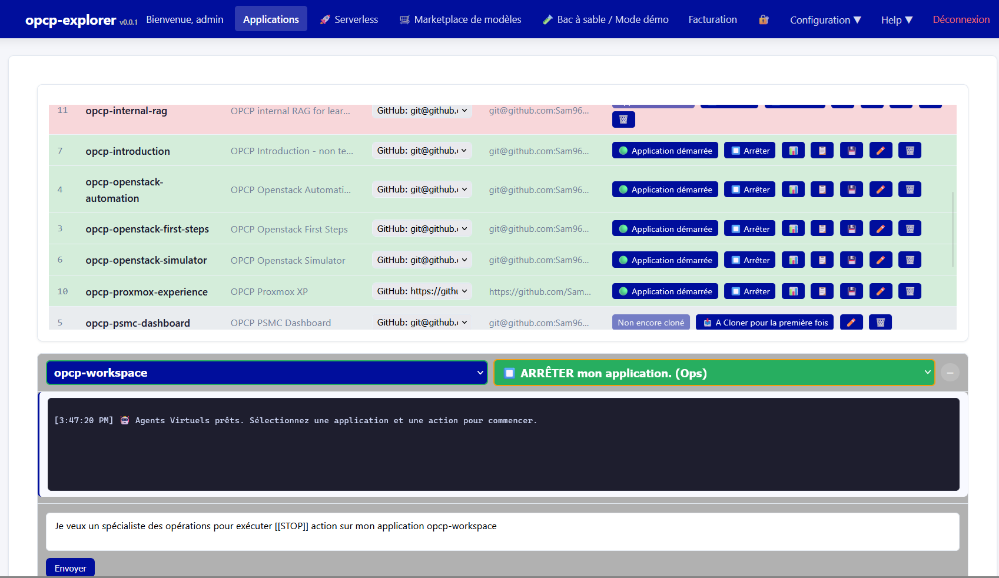

Agentic AI — 3-Hour Learning Session
Welcome to the agentic-AI learning session. Over three hours you will move from understanding what an AI agent is to designing a functional, reliable, and controllable agent of your own. Throughout, the opcp-explorer platform (Agentic-AI-Platform) is the live environment your agent acts on through its API, CLI, and MCP interfaces.

Programme
The course is organized into three sections:
- Fundamentals & Governance — one section in two subsections. Introduction & Fundamentals covers assistant vs agent and the autonomy spectrum, the seven core components, the Think → Act → Observe loop and its variants (ReAct, Plan-and-Execute, Reflexion), and stopping criteria. Design & Governance covers multi-agent patterns, when not to go multi-agent, the five guardrail layers, human-in-the-loop governance and the OVHcloud AI Policy, and two workshops: threat modeling and an end-to-end agent design capstone.
- Quiz — a 15-question check on the Fundamentals & Governance material; score at least 12 of 15 to pass and record it toward your progress.
- Sandbox Labs — two hands-on labs: the shai multi-agent orchestrator, then OPCP-EXPLORER running-applications operations (deploy, start, stop, modify, back up) that your agent orchestrates as its toolset.
Fundamentals & Governance
Introduction & Fundamentals
From Assistant to Agent
Anatomy: Seven Core Components
The Agentic Loop & Variants
Stopping Criteria
Design & Governance
Quiz
Sandbox Labs
Learning Objectives
- Differentiate an AI assistant from an AI agent and choose the right level of autonomy
- Identify the core components of an AI agent and the role of each
- Analyze the agentic execution loop (Think → Act → Observe)
- Design a multi-agent system and select the appropriate architectural pattern
- Govern agent autonomy through guardrails (permissions, limits, human validation, observability, kill switch)
- Apply responsible-AI practices aligned with the OVHcloud AI Policy
Tracking Your Progress
As you complete each lesson, click the "Mark as Complete" button. Your progress is saved locally and displayed in the header progress bar.
Tip: The threat-modeling workshop and the Sandbox Labs are hands-on. Complete the reading first, then launch the lab for practical exercises.